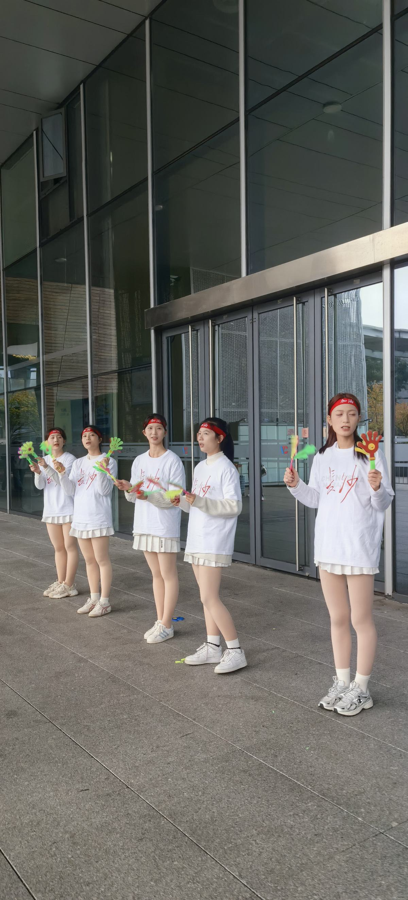
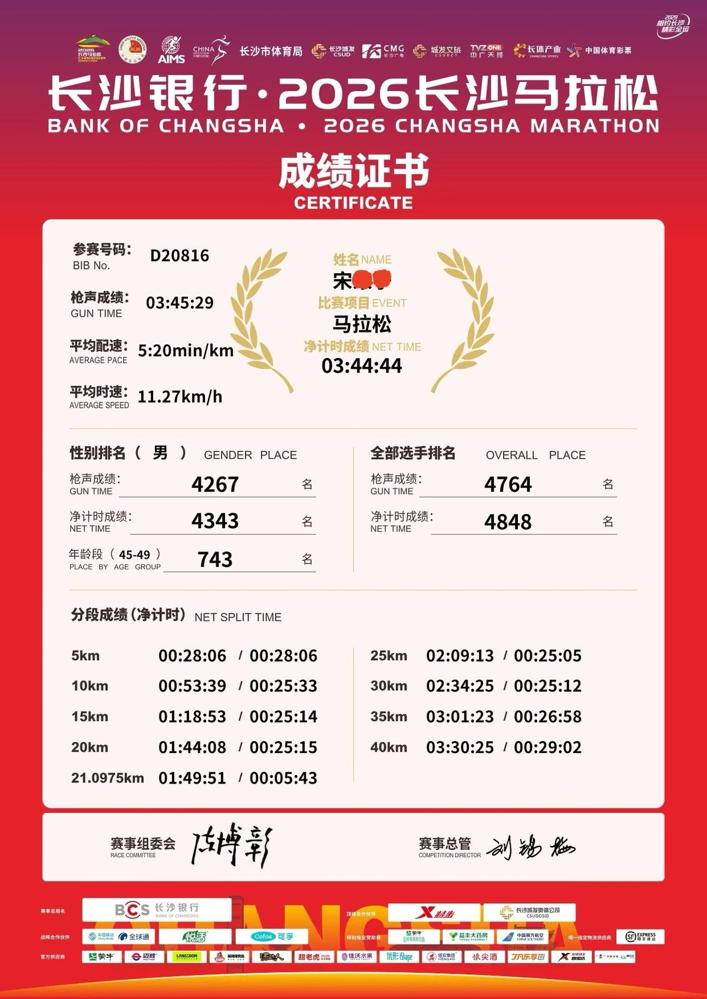

Act I减量
赛前一周，跑完最后一个30公里LSD，开始减量。饮食跟着一起调：前三天只吃肉，把身体里存着的糖原一点点耗掉——到周三，人已经有点饿昏的感觉；后三天只吃碳水，让糖原全部换成新长出来的。比赛日早上的配方是米饭加椰子水煮的粥，朋友笑称这是日本人的吃法。
现在回头看，那七天本身就是一种训练，练的不是腿，是"空"。把旧的烧掉，把位置腾出来，身体才肯重新装满。长跑这件事，功夫大半在比赛之外——杜威说一个完整的经验从期待开始，马拉松的期待，是用一周的饥饿喂出来的。
Act II配速
起点，多云，12°C，北风，适合跑步的天气。人群里看到一位轮椅大哥，神情乐观，跟周围的跑友一一击掌。赛前没花精力跟朋友互动拍照——想留着体力，今天想冲330。
第2公里，6分15秒。过第一个厕所的时候还想憋过去，说不定出出汗就好了；到第二个厕所就没再犹豫——大脑战胜了腿。全程最慢的一公里，不在终点前，在起点。此后如释重负，终于撒开了脚丫子：5分28、5分08、5分04、4分57、4分55。路过毛泽东青年艺术雕塑都没停下来拍照，反而加了速。
15公里过江。江上小舟游弋，微风拂面。印象最深的是江边公园大片的绿草地——要能拥有这样一片园子做园艺，此生再无他求，也许这就是心底的岁月静好。这个念头只停了几秒钟，配速没掉。
第21公里，4分48秒，全程最快的一公里，恰好在半程。半马的计时牌从头顶掠过，身体还有余裕。这提速也许来自全马对半马的优越感——你们的终点，才到我的中途。现在回头看，那是整场赛跑最像谎言的一公里：身体在半程递给你一颗糖，让你误以为后半程不过是前半程的重复。
25到32公里，脑子开始放电影：怎么把"上市操盘"做成自己的品牌；移居香港之后，渣马要怎样体验；AI时代怎么革新孩子的教育，借机器鸭这个道具，养出孩子探索的动力。都是短时镜头，理性很快把脑子拉回跑道——坚持到35公里不抽筋，就成功大半。能量胶按15、25、35公里排好，像提前给后半程埋下的三根桩。
Act III撞墙
第33公里，5分24秒。速度慢下来的第一反应，是不再看表。脚变沉了。
过了35公里，心里冒出想停一下、喘口气的念头。思想斗争了几个回合，理性的那一半占了上风——回头算了一笔账：35公里之后要提到4分以内的配速，才够得着330。这笔账一算完，就知道330没有了。
心率倒是很诚实：从158降到154，再降到151。腿先投了降，心还想打。配速从5'24"一路退到5'47"，浑身上下只有一个数字没有动：步频180。第1公里是180，第38公里还是180。腿已经不是腿了，是两根借来的木头，可那个节拍还在，一下，一下，像有人在身体里敲木鱼。
Act IV冲刺
最后三公里，看到的是别人加速冲线，345的配速员从我身边超了过去；听到的是两岸的加油声。声音都是真的，可它们进不到身体里面来。6分03、6分10、6分13，最后0.53公里，7分10秒一公里，几乎是走完的。

挂上奖牌那一秒，没有兴奋，只有松一口气，冷静得不可想象，甚至没有拍照的冲动。
后来想起王军霞讲的，亚特兰大高烧不退场，赛中靠注视裁判、看到对方点头来汲取力量。对照自己这一场，从头到尾好像都待在自己的空间里——轮椅大哥的笑、两岸的加油，都看见了，听见了，却没有借到力。
但真的是没有愿力吗？也许愿力有两种。一种来自外面的点头，一种来自身体里的节拍器——外界的一切都乱了，它还在原地，一下，一下。杜威说，一个完整的经验不在于结尾有多激昂，而在于它把自己走完了。
42.195公里，3小时44分，是2026年157小时训练的最后一幕。终点没有烟花，只有呼吸。
